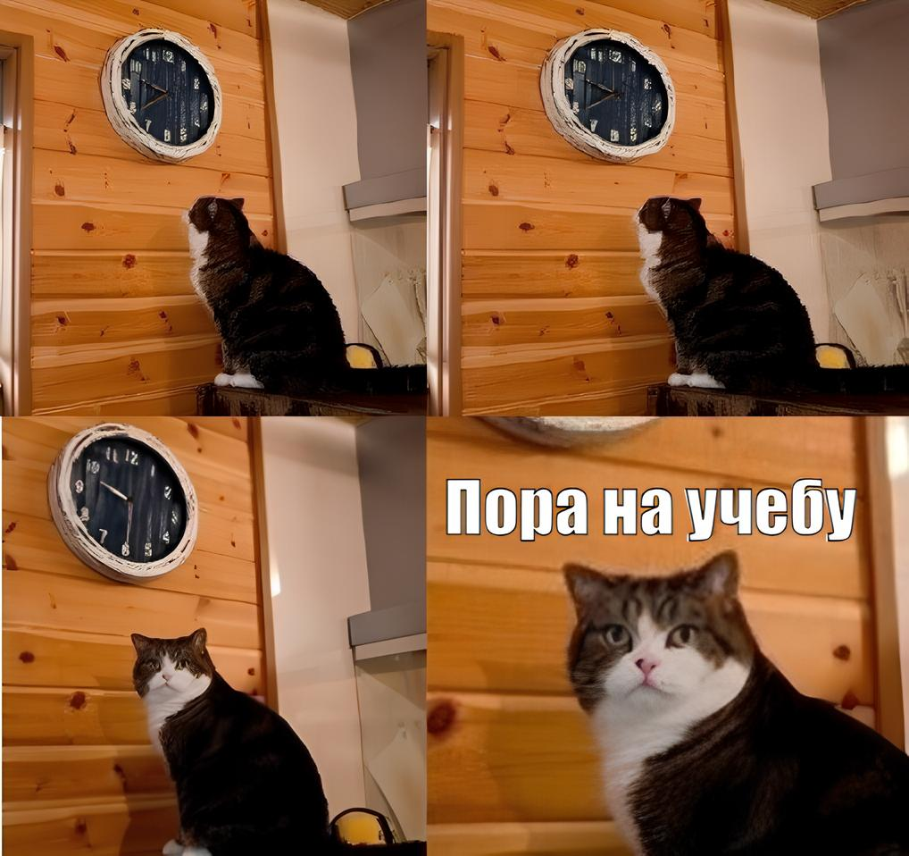
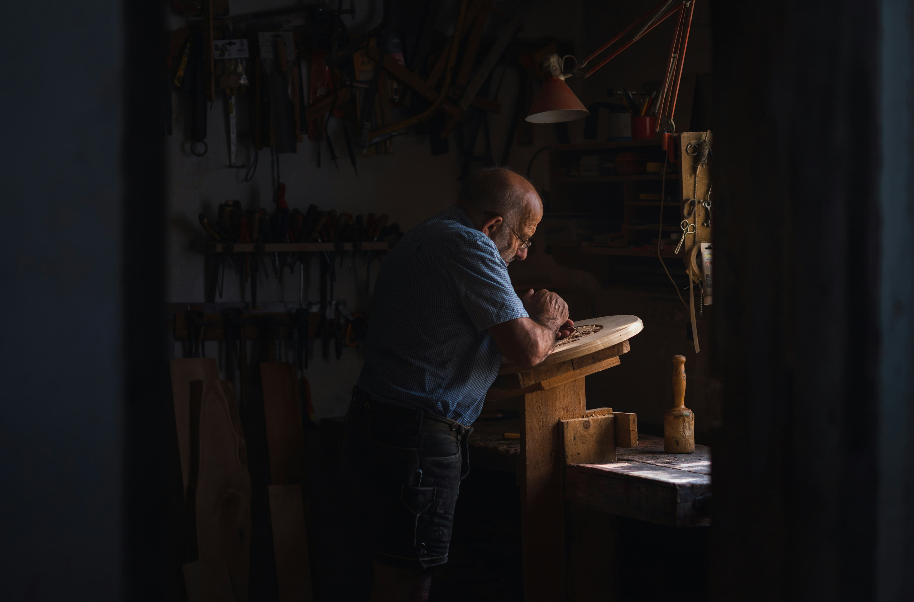
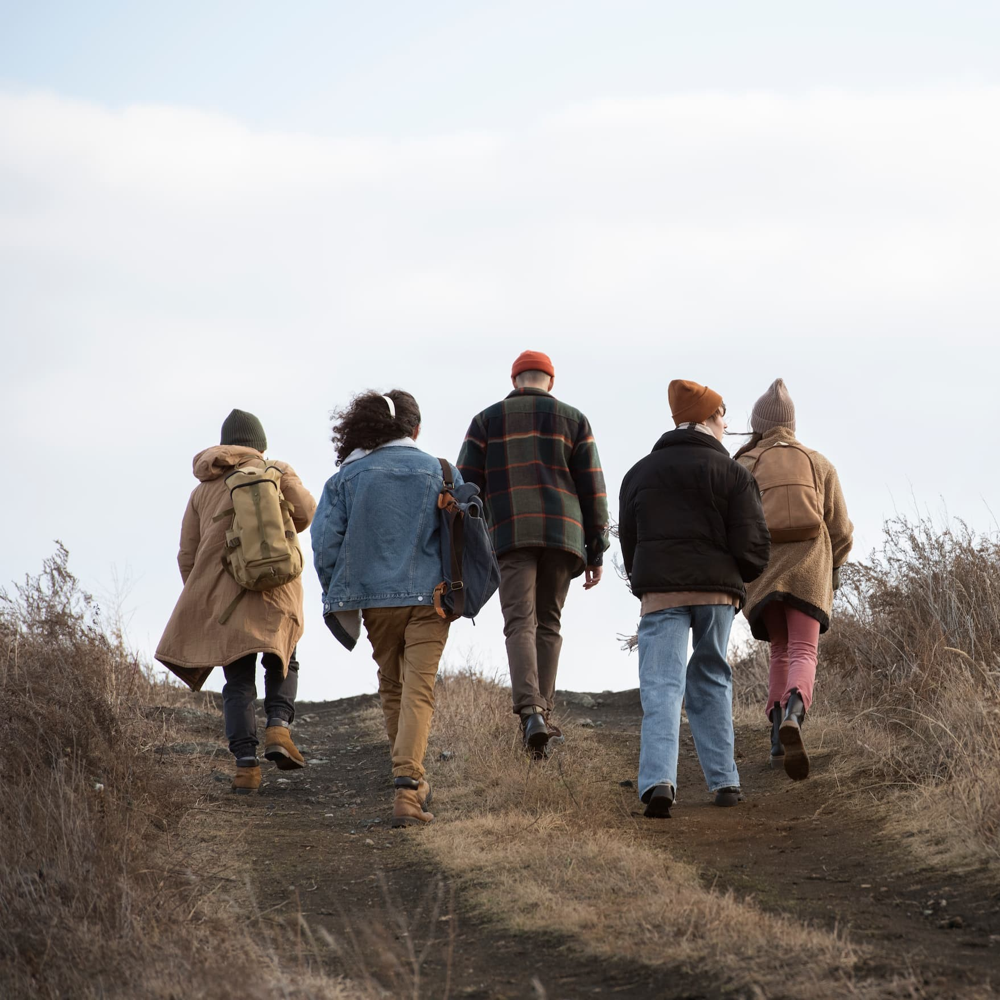
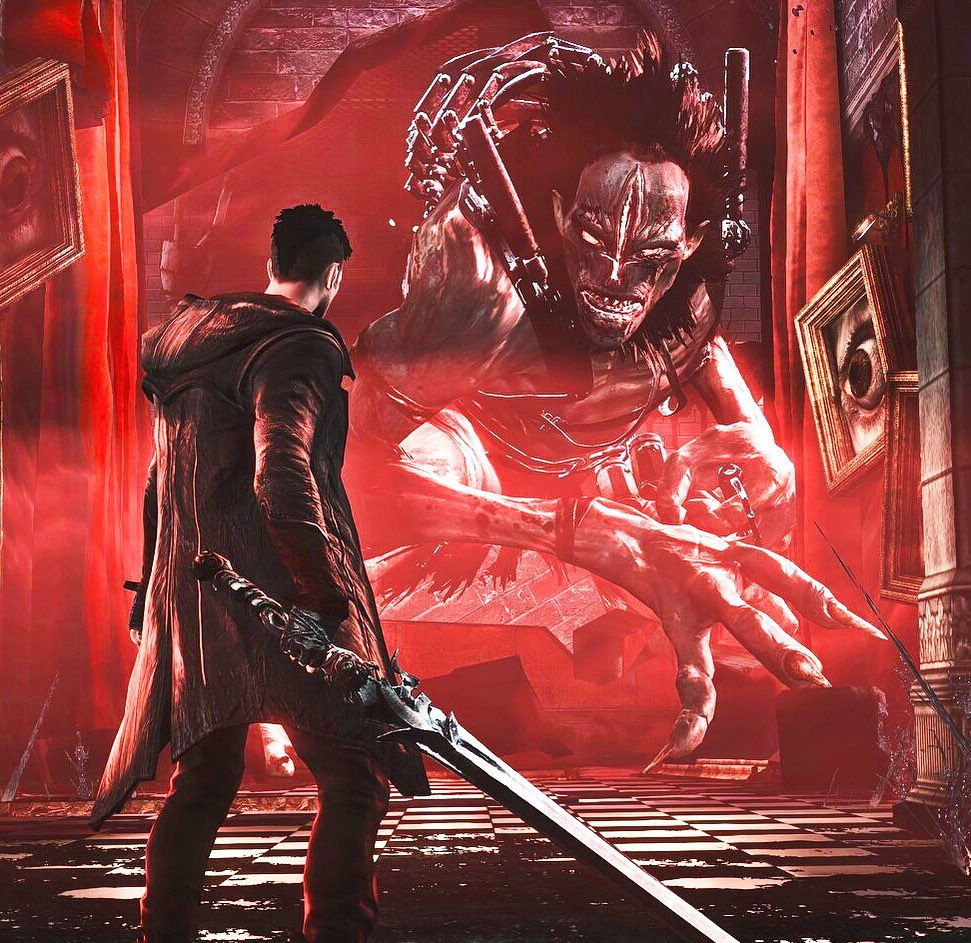
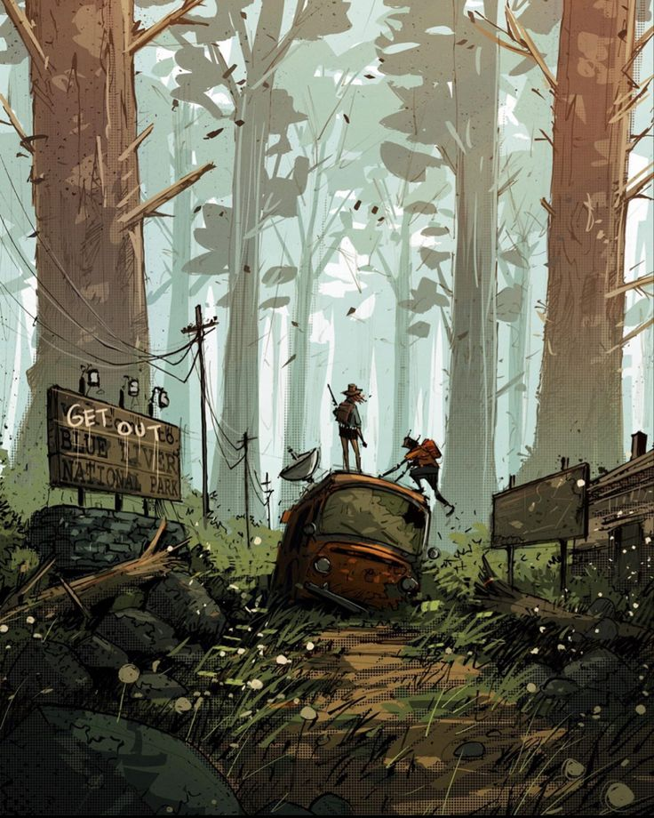

-
Фритрек и нулевой спринт: Подготовка к работе
Это было самое начало пути. На этом этапе важно было проникнуться основами и настроиться на учёбу. И, возможно, подумать, как новые знания могут повлиять на ваше будущее.
Начало моего обучения было одновременно спонтанным и задуманным очень давно. Хоть сильное желание сменить работу и изменить стандартную жизнь возникало часто в виду жизненных обстоятельств я откладывал всё на потом… Пока в одном из разговоров с другом-коллегой не узнал, что он тоже решил поменять работу и более того уже начал обучение. Вдохновившись этим, я понял, что и мое время пришло и я начал свое обучение.
-
1 спринт: Я — чистый лист
На первых этапах мы работали со страхами и сомнениями, которые часто испытывают новички. Один из них — страх перед чистым листом. Это, конечно же, намного сложнее, чем боязнь куска бумаги. Часто за этим ощущением скрываются более глубокие вопросы: с чего начать? а вдруг будет слишком сложно? что, если я не справлюсь?
Хоть и вводный курс и был для меня прост, меня не одолевало ощущение что это капля в море всего того, чему мне придется учится, и как же я был прав. И меня даже не пугали масштабы учебного процесса сколько мысль о том, что я не справлюсь. Но мой энтузиазм и подготовленность к изменениям всего ритма жизни меня тянули и я решительно продолжал первый спринт.
-
1 спринт: А если не получится?

Первый проект — позади! Но это всё ещё самое начало пути. Радость могла быстро померкнуть и смениться ожиданием провала. Или вы, наоборот, могли вдохновиться успехами и поверить в себя.
Как только первый спринт закончился я должен был почувствовать облегчение словно гигантская глава моей жизни подошла к концу и начались времена отдыха, но все было не так. Когда я смотрю на большие планы я начинаю все к ним масштабировать и когда вижу неделю отдыха в годах работы я понимаю всю его мимолетность. Но, к счастью, энтузиазм не собирался покидать меня, а мои друзья и коллектив на обучении продолжали поддерживать меня на моем пути. Однако самый мой главный враг уже начал ко мне подбираться.
-
2 спринт: Погоня за идеалом
На этом этапе вы уже достаточно разбирались в основах вёрстки, чтобы понять, как много ещё впереди. Вы могли попытаться погнаться за идеалом и понять, что он недостижим. А, может, вы вовсе и не подвержены перфекционизму и вместо того, чтобы сделать идеально, старались просто сделать.
Второй спринт знаменовал собой куда более углубленное изучение вёрстки и просто слегка посмотрев назад я увидел, как на первом спринте было проще. Но это было не важно, меня уже ввел не столько энтузиазм, сколько просто приятное выполнение работы которая начала постепенно мне приносить удовольствие и желание сделать красиво, а не только мысль «да сколько ещё здесь уроков?»
-
2 спринт: О тех, кто рядом
Всё это время вы были не одиноки (хотя, возможно, иногда и чувствовали, что одни против целого мира). Вас окружали одногруппники, команда сопровождения и просто близкие люди, которым можно пожаловаться, если очередной макет просто так не поддавался. Осваивать что-то новое легче, когда рядом есть единомышленники, не правда ли?
Спринт шел как по маслу, причинами даже стали не столько мой интерес, сколько помощь родных и друзей, одни стали заниматься домашними делами, не трогая меня что бы я больше тратил время на учебу, друзья же эмоционально меня поддерживали запомнили мое расписание на день ценив мою любовь к одиночеству и всячески толкали вперед. И даже на основной работе все было на удивление спокойно… Но, как и во многих эпосах это все было просто затишьем перед бурей.
-
3 спринт: Обходные стратегии

На этом курсе вы постоянно решали разные задачи. В какой-то момент вам могло показаться, что решения просто иссякли. Значит, пришло время посмотреть на задачу под другим углом.
И вот третий спринт, все должно было быть идеально всё было тихо мирно и вскоре новый год, и лишь мои ощущения давали знать: грядут проблемы. Семья уехала в отпуск и все домашние дела и три вечно голодных кота на мне, на работе завал, друзья стали проводить все встречи без меня ведь я был занят, ну и обучение стало еще сложнее что меня должно было окончательно вымучить. Но с большим количеством дел приходит и сила того, что я должен взять себя в руки и изменить подход и взгляд на учебу, перейдя на режим «Домашние дела после работы, потом безпрерывно учусь допоздна»
-
3 спринт: Когда опускаются руки
Во время учёбы часто возникает чувство, когда не знаешь, за что хвататься. Вроде и проектную пора сдавать, и задачи хочется порешать, и в теории получше разобраться, и жизнь не забыть пожить. В такие моменты очень нужна концентрация. Вспомните, откуда вы её черпали.
Конец спринта был неожиданным словно эти недели и не прошли вовсе. Стресс накапливался и мой страшнейший враг – лень, давал о себе знать после каждого «рабочего времени» из-за чего «время отдыха» перед «учебным временем» начало увеличиваться. Но я выполнил спринт ведь все это время меня продолжали и продолжат держать уверенность, интерес, желание изменить свою жизнь к лучшему.
-
«Сейчас я здесь»
Сейчас вы уже очень много знаете о вёрстке. Но это только начало. Во-первых, впереди ещё много материала про «красотищу». Во-вторых, с окончанием курса учёба не заканчивается. Вёрстка — это целый мир. И этот мир постоянно меняется. Познать его полностью не получится, но это тот случай, когда важен сам процесс познания. Ведь часто путь — и есть результат.
Новый год, новый спринт, новые знания, новые проблемы, и даже новый Я. Но меня это не особо и пугает, пусть и мой страшный враг продолжает следовать за мной по пятам. Мои цели продолжают нести меня вперед к новым знаниям, а старые проблемы постепенно уйдут и превратятся в опыт что поможет мне и дальше с успехом учиться.